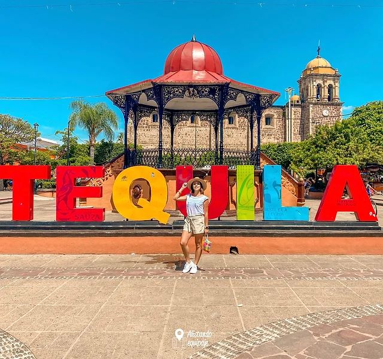
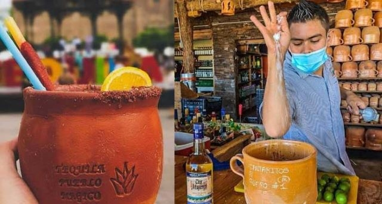
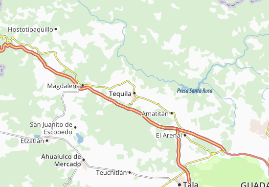

Tequila
Su nombre viene de la voz náhuatl “Tecuilan” que significa “lugar de tributos”. Tequila guarda celosamente algunas de sus más antiguas tradiciones, como la típica bendición de las nueve de la noche, cuando el cura del lugar bendice a los habitantes al tocar las campanas en tres ocasiones. El pueblo se detiene en ese momento, los lugareños se ponen de pie y dirigen su mirada hacia la iglesia.
Las artesanías que se producen en el municipio aluden al agave y a la producción del tequila. También se fabrican objetos de barro.
El Museo del Tequila ofrece una completa exposición sobre la historia y técnica de elaboración de la famosa bebida, además de una colección de botellas.

¿Que hacer en tequila?
En la entrada del pueblo observarás una glorieta con unas estatuas de jornaleros, ideal para tomarte una foto, sí continúas derecho hacia la dirección de Tequila Centro, toparás con la plazoleta principal, alrededor se observarán cientos de locales que venden recuerdos, comida y por supuesto, la bebida de los dioses el Tequila.
En la plaza principal del pueblo está la catedral y a un lado se pueden observar voladores de Papantla, cada 15 minutos hacen el ritual milenario, además, encontrarás un sin fin de ofertas para probar un tradicional 'cantarito', el precio aproximado sin tequila es de 60 pesos el vaso y con tequila 80 pesos.
El cantarito es una bebida tradicional del municipio, está compuesta por hielo, jugo de limón, jugo de naranja, refresco de toronja, sal y por supuesto, uno o dos shots de tu tequila favorito.
A los alrededores de Tequila hay tequileras de marcas nacionales y locales, puedes hacer un recorrido para conocer el paso a paso de la elaboración de la bebida, también puedes visitar algunos campos de agaveros que existen en la zona.
En el Pueblo Mágico encontrarás diversos tours, desde los más caros como el de el de José Cuervo y otros con precios más accesibles y completos, como el que ofrece la Secretaría de Turismo del Estado.

¿Cómo llegar a Tequila?
Primero, puedes llegar de tres formas al Pueblo Mágico, una opción es desde la antigua central de camiones de Guadalajara, en esta terminal salen autobuses cada media hora, el costo aproximado del boleto es de 100 a 120 pesos el boleto sencillo.
Por medio de la aplicación Blabla Car puedes obtener tu traslado en $70 pesos la ida, recuerda que tienes que apartar tu viaje por lo menos con un día de anticipación y verificar que el conductor tenga buenos comentarios por servicio.
Sí cuentas con carro de cuatro cilindros, con un cuarto de tanque bastará para que puedas hacer tu viaje de ida y vuelta a Guadalajara.

Costos Estimados
Costos aproximados
- Camión ida y vuelta $240 pesos
- Cantarito $80 pesos
- Tour $250 pesos
- Comida $100 pesos
Total: $670 pesos